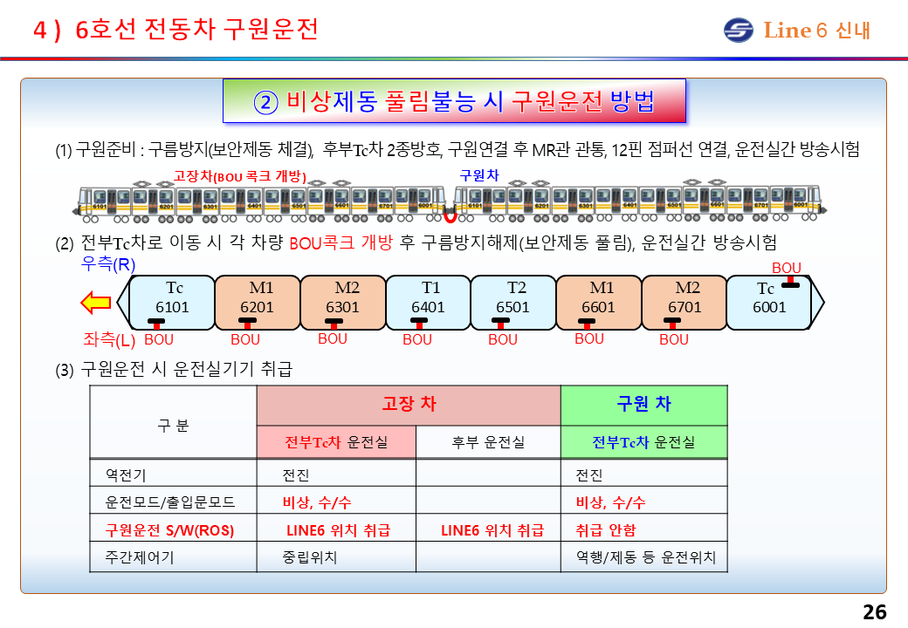
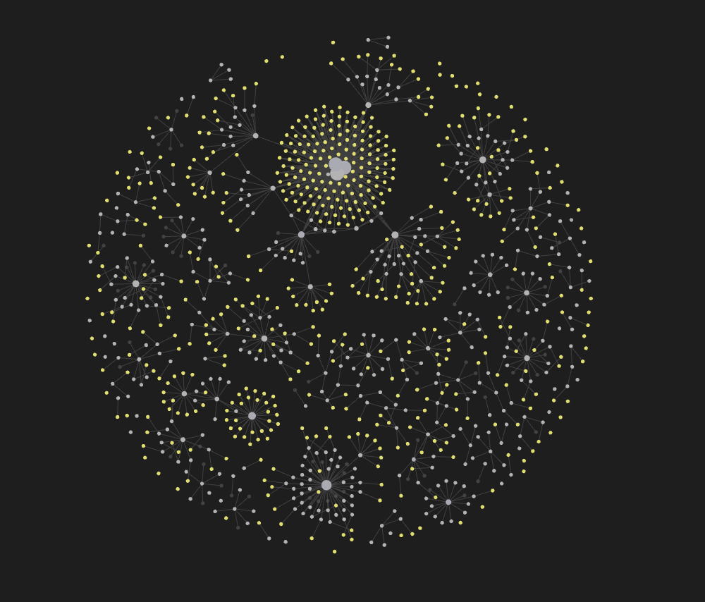
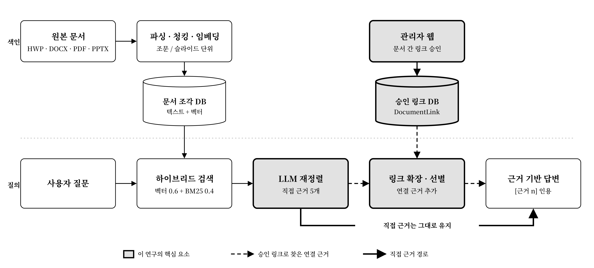

사규와 매뉴얼을 근거로 답하는 승무원 마스터 가이드 Da-Al-G
철도 운전 업무에는 운전 매뉴얼, 회사 사규, 부록, 고장 조치 가이드 등 참조 문서가 많으나, 분량이 방대하고 구조가 복잡함
401건
사규 399건, 6호선 전동차고장조치 길라잡이 2권
2,244쪽
사규 2,087쪽, 길라잡이 157쪽 (사규는 관제·운전·안전 등 6개 분야)
구두 전달 의존: 현장에서는 문서 확인보다 구두 전달에 의존하는 경우가 많아, 정보 누락·왜곡 가능성 존재
개발 목표: 자연어 질문에 대해 관련 문서를 검색하고, 답변과 근거를 함께 제시하는 AI 어시스턴트

Retrieval-Augmented Generation: 외부 문서를 검색해 LLM의 답변 근거로 활용하는 기법. 특정 문서 기반 질의응답에 주로 사용되며, 기본 형태는 벡터 RAG
강점: 표현이 달라도 의미가 유사한 문장의 검색에 강함
한계: 텍스트상 연관성이 없는 문서를 연결해 답해야 하는 다알지와 같은 과제에서는 충분한 성능을 보장하지 못함
구원운전 시 매뉴얼의 조작 절차와 운전취급규정의 전령법 조항을 함께 참조해야 함. 그러나 두 문서 간 상호 참조 문장이 없어, 의미 유사도 기반의 벡터 RAG로는 연결 불가
6호선 매뉴얼
구원운전
비상제동 풀림불능 시 구원차를 연결해 고장차를 이동시키는 절차
유사도 0.465
규정 청크 1,550개 중 454위
검색 상위 5위 경계 0.600에 미달
운전취급규정 제163조
전령법
“후속열차로서 고장열차를 구원할 때에는 운전관제가 시행한다.”
측정: 운영 벡터 DB(text-embedding-3-small), 길라잡이 ‘비상제동 풀림불능 시 구원운전 방법’ 청크와 운전취급규정 제163조 포함 청크 간 코사인 유사도. 규정 청크 전체 평균 0.427
문서를 청크 단위로 분할·임베딩한 초기 시스템의 RAGAS 점수. 네 지표 모두 실사용 기준(약 0.8)에 크게 미달
RAG Assessment: RAG 파이프라인의 성능을 정량적으로 평가하는 오픈소스 프레임워크. 모든 지표는 0~1 범위이며, 일반적으로 0.8 이상을 실사용 가능 수준으로 봄
검색 품질 · Retriever
답변 품질 · Generator
Context Precision 상위 검색 결과 중 관련 문맥의 비율
Faithfulness 답변 진술이 검색 문맥에 근거하는 정도
Context Recall 정답에 필요한 정보의 검색 누락 여부
Answer Relevancy 답변과 질문의 관련성
Es et al., “RAGAS: Automated Evaluation of Retrieval Augmented Generation,” EACL 2024 System Demonstrations. $v_k$: $k$번째 문맥의 관련 여부, $g_i$: 답변에서 역생성한 질문, $o$: 원래 질문.
목표: RAGAS 4개 지표 모두 0.8 이상
벡터 RAG
텍스트를 청크 단위로 분할·임베딩하여 의미 유사도로 검색. 텍스트상 연결되지 않은 문서는 검색 불가
Hybrid RAG
벡터·키워드 검색에 실무자가 승인한 문서 간 링크를 결합하여, 실무상 연관 문서까지 근거로 활용
HybridRAG
2024 · ICAIF ’24
벡터 검색과 지식 그래프 검색을 결합하여, 전문 용어가 많은 금융 문서에서 성능 향상
Sarmah et al., “HybridRAG: Integrating Knowledge Graphs and Vector Retrieval Augmented Generation for Efficient Information Extraction,” ICAIF ’24, pp. 608–616.
KG²RAG
2025 · NAACL 2025
청크 단위 개별 검색 시 청크 간 관계가 누락되는 문제를 지적하고, 지식 그래프 기반으로 관련 청크를 확장 및 정렬
Zhu et al., “Knowledge Graph-Guided Retrieval Augmented Generation,” NAACL 2025, pp. 8912–8924.
지하철 정비 AI
2024 · ICAICE 2024 · 본 과제와 가장 유사
정비 기술문서와 운영 매뉴얼로 지식 그래프와 벡터 DB를 구축하고, 두 방식으로 검색하되 그래프 기반 답변을 우선 사용
Yang et al., “Knowledge-Enhanced Large Language Model-Based Assistance Training System for Subway Maintenance Personnel,” ICAICE 2024, pp. 25–29.
차별점: 지식 그래프를 새로 추출하지 않고 문서 자체를 검색하며, 실무자가 승인한 문서 간 연결을 따라 근거를 재정렬
선행 연구와 Karpathy의 LLM Wiki를 참고하여, 전체 문서를 마크다운으로 정리하고 문서 간 링크를 옵시디언 형식으로 저장
0.782
Faithfulness
0.589
Answer Relevancy
0.743
Context Precision
0.623
Context Recall
한계: 성능은 향상되었으나 마크다운 변환 과정의 오류가 많고, 서울교통공사 측의 유지·보수가 어려움
A. Karpathy, “LLM Wiki: A pattern for building personal knowledge bases using LLMs,” GitHub Gist, 2026.

1학기 방식은 구간 연결 문법을 별도로 익혀 직접 작성해야 했으나, 2학기 관리자 UI에서는 텍스트를 드래그해 등록하는 것만으로 노드 간 연결 가능

하이브리드 검색: 벡터 유사도 점수 0.6, BM25 키워드 점수 0.4의 가중합으로 검색
BM25: 질문 단어의 문서 내 출현 빈도에 기반한 키워드 검색 알고리즘. “제25조”, “제륜자” 등 특정 용어 검색에 유리
재정렬 및 링크 확장: LLM이 근거를 재정렬한 뒤, 링크된 문서가 있으면 이를 추가 근거로 활용해 답변 생성
동일 평가셋 기준 단계별 RAGAS 점수 비교 (실사용 기준 약 0.8)
| 벡터 RAG | 1학기 | 2학기 | |
|---|---|---|---|
| Faithfulness | 0.141 | 0.782 | 0.961 |
| Answer Relevancy | 0.156 | 0.589 | 0.852 |
| Context Precision | 0.220 | 0.743 | 0.932 |
| Context Recall | 0.100 | 0.623 | 1.000 |
승무원용 앱에서 질문 입력부터 근거 기반 답변 확인까지의 흐름
질문 입력: 고장·이례 상황을 자연어로 질문
근거 검색: 하이브리드 검색 후 승인 링크로 연결된 문서까지 확장
답변 확인: 답변의 각 문장에 [근거 n]으로 출처 문서와 조항 표시
서울교통공사 요청 편의 기능 추가 및 문서 수정·추가 시 RAG 시스템의 안정성 검증